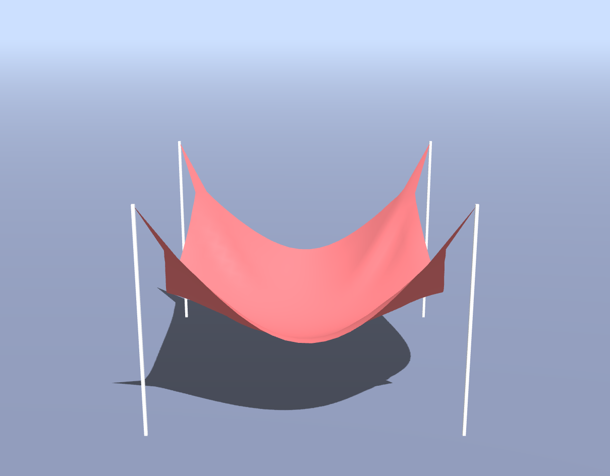
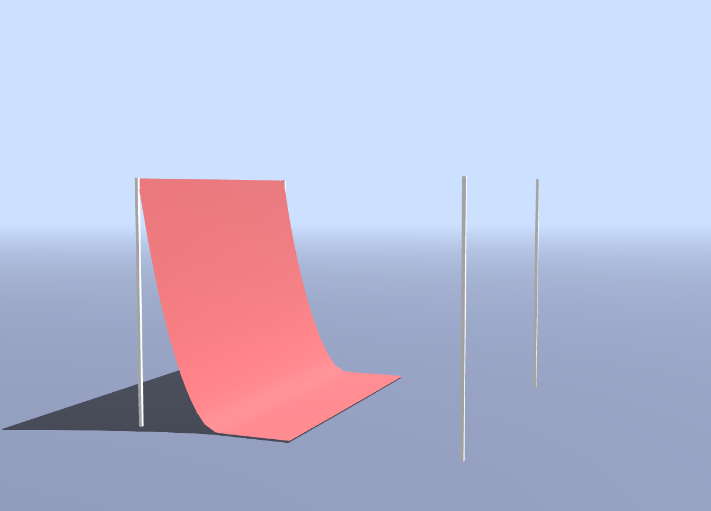
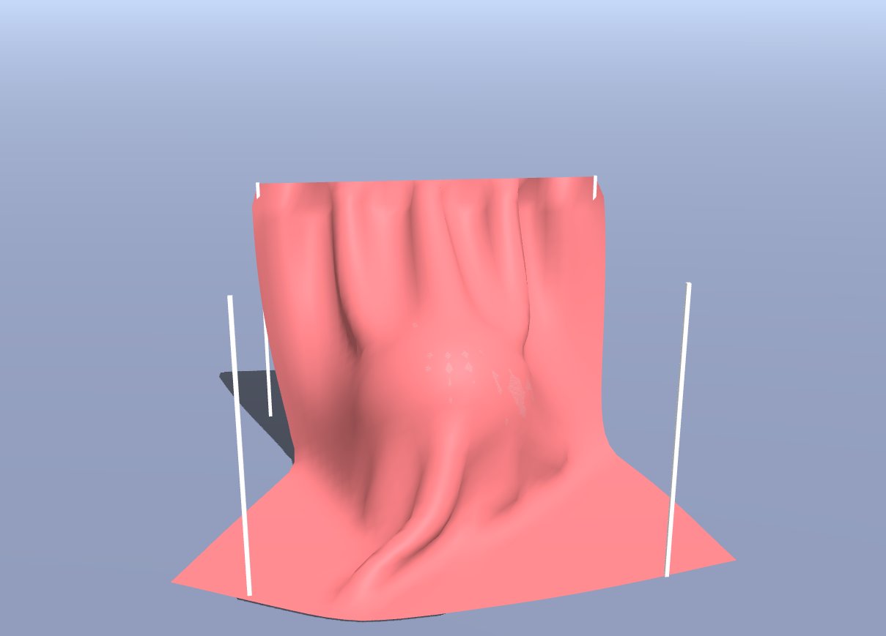
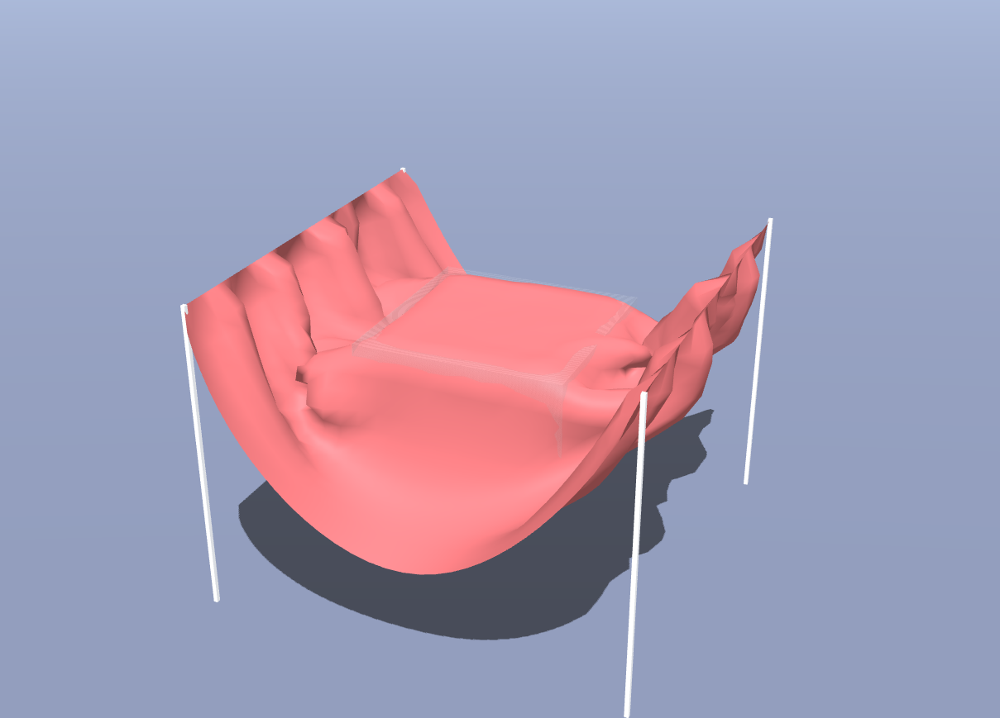
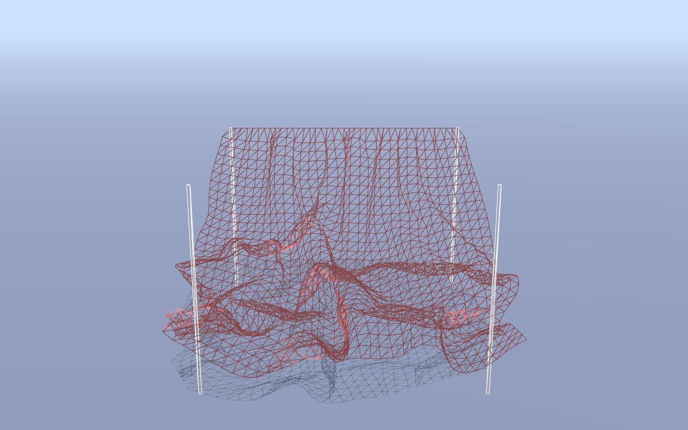
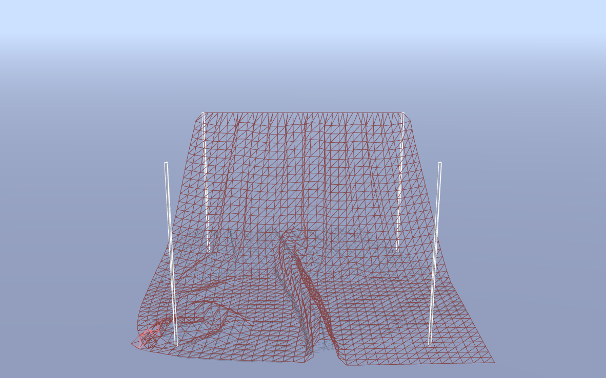
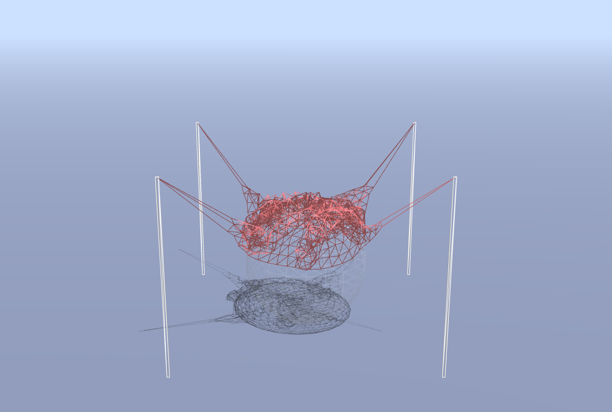

COS426 Assignment 5 Cloth Simulation — Writeup
Switch to: Simulation
that all images in this writeup were generated directly by my solution code or provided by the course staff (exception: art contest submissions may pass through intermediary software like GIMP)
that no other student has viewed my writeup explanations or my writeup images
that my solution code is my own work; particularly that my solution was not copied from any other student's solution code, and that no other student copied their solution directly code from me
that I did not discuss assignment specifics or view the solution code of any other student besides that of my (optional) partner
that I have followed all other course collaboration and course plagiarism policies as written on the course website.
ANNA EATON (aceaton)
Collaborated with: PARTNER NAME HERE (partner-netid-here)
Table of Contents
- (0.5) Event listeners
- (1.0) Cloth
- (1.5) Constraints
- (1.0) Gravity
- (1.5) Verlet integration
- (0.5) Floor collision
- (1.5) Sphere collision
- (1.5) Box collision
- (1.0+) Extensions
- (1.0+) Art Contest
Event Listeners
Briefly describe your implementation of adding event listeners to the scene. In particular, list all of the keys that you have bound to an action, and briefly describe the action, as below:
- "ArrowUp": Move the looked-at particle upwards.
- "ArrowDown": Move the looked-at particle downwards.
- "ArrowRight": Move the looked-at particle rightwards.
- "ArrowLeft": Move the looked-at particle leftwards.
- "x": Move all the particles vertically (in the x direction) by some random amound in a specified range.
Cloth
I represented each point in the cloth as a point mass. Then I connected them all with "springs" in between adjacent points, diagonally adjacent points, and two points away. The spring function corrects the particles to a certain position towards their resting state.
Constraints
The constraints act on all the spring connections we initialized as described above. They pull the two points together by a factor of their distance beyond the rest distance.
Gravity
I represented gravity as a force in the -y direction with magnitude g * the mass of the particle, because F = ma.
Verlet integration
I did verlet integration to calculate the new particle position based on the current position of the particle, by adding the damp coefficient times velocity (bootstrapped from the change in position over dt) and then adding the acceleration times dt^2.
Deliverable (click me): Please include an image of your cloth (not wireframe) with "Corners" pinned and no objects in the scene in its
final resting state, to demonstrate that your cloth updates its particle positions properly over time.

Floor collision
I checked if the particle was in the floor and if so set its y value to that of the floor + EPS.
Deliverable (click me): Please include an image of your cloth (not wireframe) with "OneEdge" pinned and no objects in the scene in its
final resting state, to demonstrate that your cloth does not clip through the floor.

Sphere collision
If the point was in the sphere and had been in the sphere, I moved it to the nearest point on the outside of the sphere. If it just entered the sphere, I moved it to a combination of the nearest point on the outside and its previous point shifted by the motion of the sphere (to represent friction).
Deliverable (click me): Please include an image of your cloth (not wireframe) with "OneEdge" pinned and the sphere object in the scene
in a resting state. Increase the size of the cloth to 700 so that it remains draped over the sphere.

Box collision
Briefly describe how you handled box collisions.
Deliverable (click me): Please include an image of your cloth (not wireframe) with "TwoEdges" pinned and the box object in the scene
in a resting state. Increase the size of the cloth to 700 so that it remains draped over the box.

If the point was in the box and had been in the box, I moved it to the nearest point on the outside of the box by checking the distance from all the faces.
If it just entered the box, I moved it to a combination of the nearest point on the outside and its previous point(to represent friction).
Extensions
I added an event handler that shifts each point in the cloth vertically by a random number in a range of a scale.
I made the wind change sinusoidally with different frequencies in the three dimensions.
I implemented the rain effect where frequent impulses are applied downwards on the cloth.
Self intersections - I required that no two points be less than 1 restDistance apart.


Art contest
Briefly describe your submission to the art contest. Please include images and/or videos as
necessary so that we can see what you've done!
I accidentally made the sphere sticky.
